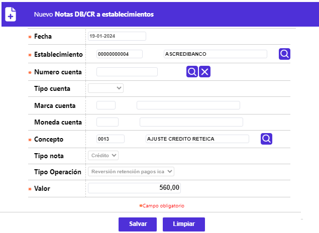

Notas DB/CR a Establecimientos
Mediante esta función la entidad efectúa los ajustes débito o crédito a los establecimientos producto de solución a movimientos pendientes de abono o cualquier otro evento que requiera de un ajuste. El formulario cuenta con los siguientes campos:

|
Fecha |
Corresponde a la fecha del sistema en la cual se realiza el ajuste a la cuenta del establecimiento. |
|
Establecimiento |
Campo que provee de una lista de valores producto del cargue y actualización de establecimientos activos de la entidad, de la que se selecciona el código del establecimiento, desplegándose la información básica del mismo. |
|
Número cuenta |
Este campo provee una lista de valores correspondiente a los números de cuenta asociados al establecimiento, producto del cargue y actualización de cuentas activas de los establecimientos afiliados al sistema. |
|
Tipo cuenta |
Campo de salida que ilustra la clase de cuenta, Ahorro o Corriente, correspondiente al número de cuenta de depósitos a afectar. |
|
Marca cuenta |
Campo de salida que ilustra, si aplica, la franquicia asociada a la cuenta de depósitos, acorde con lo definido en la pantalla de Información de establecimientos. |
|
Moneda cuenta |
Campo de salida que muestra la moneda en la cual está expresada la cuenta del establecimiento, y sobre la que se realizará el ajuste. |
|
Contabilidad host |
Campo que posee lista de valores adjunta de la que el usuario debe seleccionar entre Normal, Convenio o M.compartida el direccionamiento o enrutamiento que debe darle el host a estos comprobantes para generar la correspondiente contabilidad. |
|
Concepto |
De la lista de valores poblada en la opción Conceptos contables para ND/NC del presente módulo, se selecciona el tipo de afectación que se realizará a la cuenta de depósitos del establecimiento. |
|
Tipo nota |
Una vez seleccionado el concepto que afectará la cuenta del establecimiento, este campo se alimenta con la información definida previamente en la opción conceptos contables para ND/NC del presente módulo. |
|
Tipo operación |
Una vez seleccionado el concepto que afectará la cuenta del establecimiento, este campo se alimenta con la información definida previamente en la opción conceptos contables para ND/NC del presente módulo. |
|
Valor |
Campo numérico de 16 posiciones (14 enteros y dos decimales), obligatorio, en el cual se registra el monto que afectará la cuenta del establecimiento. |